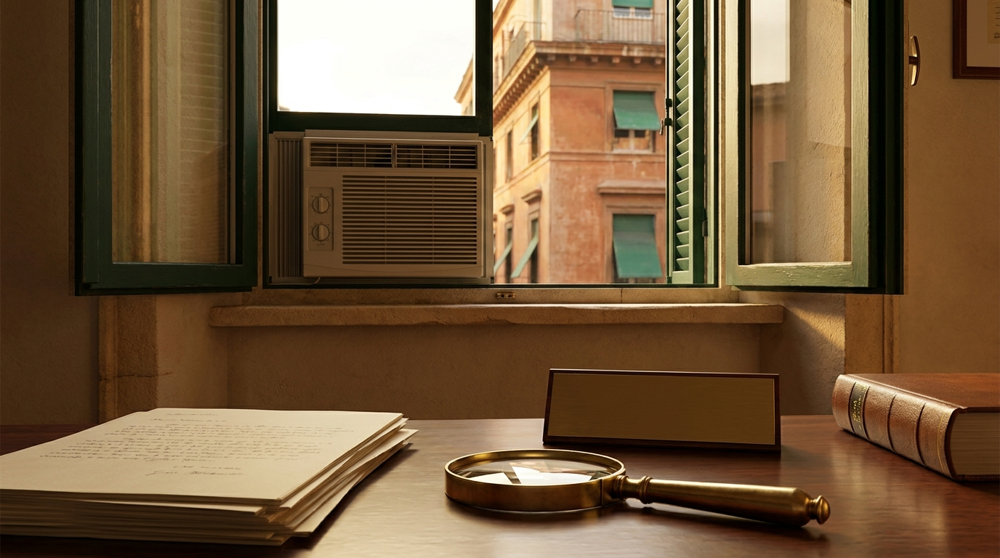

Condizionatore alla finestra: quando il condominio non può vietarlo
La Corte di Cassazione ribadisce un principio destinato a far discutere nelle assemblee: installare un condizionatore su spazi di proprietà esclusiva non richiede l'approvazione del condominio. Anche se l'unità esterna è vistosa o poco gradevole, il divieto non è automatico. I limiti restano due: la stabilità dell'edificio e il decoro architettonico. Vediamo perché conta e cosa fare in concreto.

Il principio affermato
La Corte di Cassazione ha confermato un orientamento ormai consolidato: il condomino può installare un condizionatore d'aria sulla facciata o sulla finestra che insistono su parti di sua proprietà esclusiva senza dover chiedere il via libera all'assemblea.
In altre parole, l'installazione rientra tra le facoltà del proprietario sull'unità immobiliare e sugli spazi che gli appartengono. L'assemblea non ha un potere generale di veto, e una delibera che vietasse in modo assoluto questi impianti rischia di essere illegittima.
Inquadramento normativo
Il ragionamento si fonda su due articoli del Codice civile.
L'art. 1102 c.c. disciplina l'uso della cosa comune da parte del singolo condomino: ciascuno può servirsene purché non ne alteri la destinazione e non impedisca agli altri di farne pari uso. Quando l'unità esterna del climatizzatore poggia su una parete comune, è questa la norma di riferimento.
L'art. 1122 c.c. riguarda invece le opere su parti di proprietà o uso individuale: il condomino non può eseguire interventi che rechino danno alle parti comuni o che pregiudichino la stabilità, la sicurezza o il decoro architettonico dell'edificio.
Il punto chiave sta proprio nel concetto di decoro architettonico. Per la Cassazione non basta che l'impianto sia "brutto" o ingombrante secondo il gusto soggettivo dei vicini. Occorre una compromissione concreta e apprezzabile dell'armonia estetica complessiva del fabbricato. Un'antiestetica percepita non equivale a una lesione del decoro giuridicamente rilevante.
Cosa cambia per il condomino e per l'amministratore
Per il condomino la pronuncia è una conferma di autonomia: chi vuole installare un climatizzatore sulla propria finestra o sul proprio balcone non deve attendere un voto assembleare. La libertà, però, non è illimitata.
Il confine resta tracciato da due elementi oggettivi. Primo: la stabilità e la sicurezza dell'edificio. Una staffatura che intacca strutture portanti, o uno scarico di condensa che danneggia la facciata, possono far scattare un legittimo intervento del condominio. Secondo: il decoro architettonico, da valutare in concreto, tenendo conto dello stato dei luoghi e di eventuali installazioni preesistenti già tollerate.
Per l'amministratore il messaggio è altrettanto netto. Convocare l'assemblea per "autorizzare" un'installazione su proprietà esclusiva è spesso superfluo, e una delibera di divieto generalizzato espone il condominio a contenzioso. Diverso è il caso in cui l'impianto produca danni o stillicidi sulle parti comuni o sulle unità sottostanti: qui l'azione di tutela è fondata.
Va ricordato anche il profilo delle distanze e dello stillicidio verso le proprietà confinanti: lo scarico della condensa non deve cadere sul fondo del vicino. È un aspetto frequentemente sottovalutato e fonte di liti tra appartamenti adiacenti.
Cosa fare in concreto
- Verificate la collocazione dell'unità esterna: stabilite se poggia su proprietà esclusiva o su parete comune, perché cambia il regime applicabile (art. 1122 oppure art. 1102 c.c.).
- Documentate lo stato dei luoghi prima dell'installazione: fotografie della facciata e di eventuali impianti già presenti aiutano a dimostrare l'assenza di lesione al decoro.
- Gestite lo scarico della condensa: predisponete una raccolta o un convogliamento che eviti stillicidio su parti comuni e proprietà confinanti.
- Amministratori, evitate divieti generalizzati: una delibera che vieti in modo assoluto i climatizzatori è esposta a impugnazione; intervenite solo in presenza di danni concreti o pregiudizio effettivo.
- In caso di contestazione, richiedete una valutazione tecnica: solo un accertamento sullo stato dell'edificio consente di stabilire se vi sia una reale compromissione di stabilità o decoro.
La lezione della Cassazione è di metodo prima che di merito: le valutazioni estetiche soggettive non bastano a fondare un divieto. Servono elementi oggettivi e verificabili.
---
*Contributo informativo a cura di Tamburro & Partners - Avv. Giuseppe Tamburro. Non costituisce parere legale.*
Ogni condominio ha una storia a sé.
Se gestisci un'amministrazione e vuoi un confronto su una specifica questione condominiale, scrivi allo studio. Ti rispondiamo entro un giorno lavorativo.